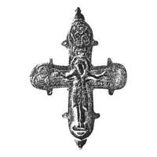

Catalog › CE-1011 · KOR2003-III.1.1.37
Valvă de față de encolpion, iconografie tradițională, brațul transversal al crucii cu crestături oblice
sec. XII (1101–1200) · Pekari (Kniaja Gora), regiunea Cerkasî (raionul Kaniv), Ucraina · Muzeul de Istorie de Stat, Moscova (GIM), secția de arheologie, inv. оп. 1670, № 10
single valve of a reliquary cross, aramă; c. XII (1101–1200); found at Pekari (Kniaja Gora), regiunea Cerkasî (raionul Kaniv), Ucraina; kept at Muzeul de Istorie de Stat, Moscova (GIM), secția de arheologie.


Identificare
- Categorie
- Valvă izolată
- Material
- Aramă
- Tehnică
- Turnare în relief; Gravare (incizie); Niello
- Dimensiuni
- Î 80 × L 70 mm
Iconografie
- Descriere avers
- Valvă de față cu iconografie tradițională. Cu crestături oblice sunt încadrate nu numai marginile valvei, ci și brațul transversal evidențiat al lemnului crucii.
- Inscripții
- МР ΘҮ; НОНЪ
- Limba
- Slavonă
Datare și atribuire
- Datare
- sec. XII (1101–1200)
- Centru
- Necunoscut
- Tipologie
- Korzukhina–Peskova 2003, tip III 1 1
Descoperire
- Localitate
- Pekari (Kniaja Gora)
- Regiune
- regiunea Cerkasî (raionul Kaniv)
- Țară
- Ucraina
- Context
- Fortificație
Păstrare și referințe
- Colecție
- Muzeul de Istorie de Stat, Moscova (GIM), secția de arheologie
- Nr. inventar
- оп. 1670, № 10
- Bibliografie
- G. F. Korzukhina, A. A. Peskova, Древнерусские энколпионы. Нагрудные кресты-реликварии XI–XIII вв., Sankt-Petersburg, 2003 [Korzukhina–Peskova 2003], p. 106, cat. nr. III 1 1/37, reprodusă la Табл. 53 (planșe, p. 295). Bibliografie citată în sursă: Леопардов 1891, II, табл. IV, 9; Корзухина, архив ф. 77, д. 15, л. 42.
- Figura
- Табл. 53
- Planșe
- Korzukhina–Peskova 2003, Табл. 53 (planșă fără paginație proprie în PDF; p. 295 tipărită)
- Observații
- Datare după Peskova: sec. XII. Inscripții adâncite sub mâinile lui Hristos. După o serie de trăsături valva este identificată cu cea din colecția N. F. Beleașevski (Leopardov II, 1891, tab. IV 9). Inscripții mixte: formule grecești și nume slavone, unele stilizate sau stricate. Coordonate: nu sunt date în sursă.
Citare: Corpus Encolpiorum, CE-1011, Valvă de față de encolpion, iconografie tradițională, brațul transversal al crucii cu crestături oblice, --root/piese/KOR2003-III.1.1.37/ (accesat 2026-10-20).